Algorithmic Regularization (AR)
The algorithm used in this code is based on the literatures of Mikkola & Tanikawa (1999) and Preto & Tremaine (1999). The development of this code refers to the Chapter 2 (Mikkola) in book The Cambridge N-body Lectures. Here the basic idea of AR is described.
The numerical simulations of gravitational N-body systems dynamical evolutions are frequently used in astrophysics. However, due to the singularity of two-body gravitational potential when these two particles become infinite close lead to the difficulty in the highly accurately integration of two-body bounded system with very high eccentricity. To get high accuracy of integration when two particles are very close, the time step for integration should be reduced significantly. This result in time consuming computation if number of particles is large. On the other hand, for a long-term integration, the total energy of the systems may be systematiclly drifted due to the numerical accuracy of integrators. Thus the sympletic methods are suggested to be used since it can keep the energy conservation for long-term integration.
However, the sympletic methods are difficult to be applied for gravitational systems due to the required time step (integration step) shrinking when two particle get close. Thus Mikkola & Tanikawa (1999) and Preto & Tremaine (1999) develop the special time transformation method based on the extended phase space Hamiltonian. The time  become a general coordinate in Hamiltonian with corresponding general momentum
become a general coordinate in Hamiltonian with corresponding general momentum  . The integration of the equation of motion then depends on the new differential variable
. The integration of the equation of motion then depends on the new differential variable  . In this case, time and the motion of the system can be integrated with a fixed step size of s, which allow the usage of sympletic methods.
. In this case, time and the motion of the system can be integrated with a fixed step size of s, which allow the usage of sympletic methods.
Hamiltonian in Extended Phase Space
Defining the general coordinates as  with freedom of
with freedom of  and corresponding general momentums ad
and corresponding general momentums ad  , The Hamiltonian equations is:
, The Hamiltonian equations is:
(1)  ;
; 
Here the dt is used as a differetial varaible. For the propuse as we discussed above, we want to use a new variable  replacing the function of time . In this case, the time is treated as a new general coordinate. And the corresponding time momentum should be also added.
replacing the function of time . In this case, the time is treated as a new general coordinate. And the corresponding time momentum should be also added.
We extend the coordiantes to  and the momentums to
and the momentums to  with total freedom of
with total freedom of  .
.
The new Hamiltonian  should also satisfy the Hamiltonian equations (1). Especially for
should also satisfy the Hamiltonian equations (1). Especially for  , we can get:
, we can get:
(2)  ;
; 
From first equation of (2), we find the linearly depend on , thus can be the form as  . The second equation indicates that the time evolution of is equal to the negative energy change of the system. Thus the value of at the time can be
. The second equation indicates that the time evolution of is equal to the negative energy change of the system. Thus the value of at the time can be  .
.
We want to write Hamiltonian equations with new differetial variable  . Defining
. Defining  , we can rewrite (1) with
, we can rewrite (1) with  and extended coordinates
and extended coordinates  as:
as:
(3)  ;
; 
However, we need to have the Hamiltonian equations the same form as original, thus we need to find another Hamiltonian  that satisfy the Hamiltonian equations:
that satisfy the Hamiltonian equations:
(4)  ;
; 
To find correct , we go back to the Principle of least action which is used to derive the Lagrangian equations. The relation between (standard) Hamiltonian  and Lagrangian
and Lagrangian  is
is
(5) 
The Principle of least action require the action
(6) ![$ S = \int_{t_1}^{t_2} L(\mathbf{p},\mathbf{q},t) dt = \int_{t_1}^{t_2} \left[ \sum_{i=1}^n p_i \dot{q_i} - H(\mathbf{p},\mathbf{q},t) \right] dt $](form_73.png)
should take the mimimum path, thus any function variation  should makes
should makes  increase. Thus when
increase. Thus when  , this condition is satisfied. This leads to the Lagrangian equations and also the Hamitonian equations.
, this condition is satisfied. This leads to the Lagrangian equations and also the Hamitonian equations.
Here the integration takes from  to
to  and the time is used as integration variable. Now we treat as new coordinate and momemtum, as new Hamitonian, and use as new integration variable. Then
and the time is used as integration variable. Now we treat as new coordinate and momemtum, as new Hamitonian, and use as new integration variable. Then  can be rewrited as:
can be rewrited as:
(7) ![$ S = \int_{s_1}^{s_2} \left[ \sum_{i=1}^n p_i \frac{d q_i} {d s} + Pt \frac{d t}{d s} - (H(\mathbf{p},\mathbf{q},t) + Pt) \frac{d t}{d s} \right] ds = \int_{s_1}^{s_2} \left[ \sum_{i=1}^{n+1} P_i \frac{d Q_i}{d s} - H'(\mathbf{P},\mathbf{Q}) \frac{d t}{d s}\right] ds $](form_80.png)
It is obvious that when
(8) 
The formula (7) become the same form as (6). Then with Principle of least action, the Hamiltonian equation (4) can be derived. We call the  is the Hamiltonian in the extended phase space
is the Hamiltonian in the extended phase space 
The Hamiltonian in extended phase space  is also useful for analyzing the systems where Hamiltonian
is also useful for analyzing the systems where Hamiltonian  explicitly depends on time and is not conserved. Since time become a coordinate in ,
explicitly depends on time and is not conserved. Since time become a coordinate in ,  is zero thus
is zero thus  become conserved quantity. The method dealing with closed system can be used with Hamiltonian in extended phase space.
become conserved quantity. The method dealing with closed system can be used with Hamiltonian in extended phase space.
Time transformation for Separable Hamiltonian
With the Hamiltonian in extended phase space, we can integrate the equation of motions with step  by choosing a kind of
by choosing a kind of  . If we choose a that makes the Hamiltonian
. If we choose a that makes the Hamiltonian  separable for
separable for  and
and  :
:
(9) 
Then explicit Leapfrog (SIA) integration method can be used. Preto & Tremaine (1999) suggests to use
(10) 
where  is the extended kinetic energy and
is the extended kinetic energy and  is the extended potential energy.
is the extended potential energy.
The Hamiltonian becomes separable:
(11) 
Then the equation of motions are:
(12)  ;
;  ;
;  ;
;  ;
;
where  .
.
Since  ,
,  . Thus during integration, 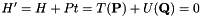. This requires
. Thus during integration, 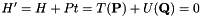. This requires  . With Taylor expansion, we can obtain:
. With Taylor expansion, we can obtain:
(13) 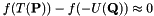
Thus
(14) 
Logarithmic Hamintonian method (LogH)
Mikkola & Tanikawa (1999) suggests to use the function 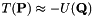 (Logarithmic Hamintonian method). In this case, the time transformation based on (14) is:
(15) 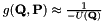
Then the equation of motions can be written as:
(16)  ; 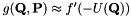; 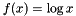;
; 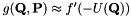; 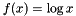;  ;
;
For the point mass systems with Newtonian gravity
(17) 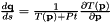; 
where G is gravitational constant and are masses of point-mass particles.
From (17) we see 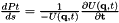. This is only for the isolated system. If the system has external force from perturbers or external potential. The energy of system (  ) may not be conserved any more. Thus the energy change should be added into during the integration.
) may not be conserved any more. Thus the energy change should be added into during the integration.
Time-Transformed Leapfrog (TTL)
The regularization methods where energy explicitly appear in the equation of motions cannot solve the few-body systems with large mass ratio (for example, planetary systems and super massive black hole with surrounding stars), because the energy is dominated by the massive bodies, and this introduce the systematic error during the integration. To solve this kind of issue, Mikkola & Aarseth (2002) developed the so-called Time-Transformed Leapfrog (TTL) method. This method is also based on time transformation. The major difference compared with the LogH method is that the time transformation function also need to be integrated.
The time transformation (10) leads to the equations of motion (12) where time transformation 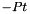 and 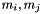 explicitly depend on kinetic energy, binding energy and potential. If we want to replace to other quantity 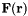, considering the requirement , we should also find another quantity that allow 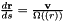. and
(18) 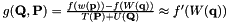
Instead of finding the for each kind of , Mikkola & Aarseth (2002) suggest to use the differential equation
(19) 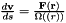
and integrate this equation to approximate 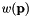 simultaneously with integration of 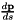.
However
(20) 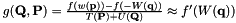
Thus 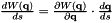 explicitly depends on the momemtum. The integration in principle are not separatable. To solve this issue, Mikkole & Aarseth (2002) recommend to use averaged momemtums 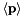 (velocities) between previous and current step's during the Leapfrog integration, because the averaged values can represent the momemtums at the D (half) step when  is integrated.
is integrated.
Then if we take  again, we have the equations of motion like:
again, we have the equations of motion like:
(21)  ;
;  ; 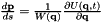;
; 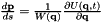;  ;
;
This solution avoid use the energy (potential) as a time transformation dependence, thus with a suitable choice of 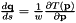, the high mass ratio systems can be integrated with high accuracy.
Implementation of ARC
We implememted AR method together with Chain (discussed below) for few-body systems by using C++ programming Language. The idea is make the integrator a C++ class thus can be easily used as a module for other codes. In this section we describe the details of the implementation.
Particle Chain
If the bounded few-body systems are inside a big cluster enviroment, the average distance between these particles can be much smaller than the scale of cluster. Thus the round off error can be large if the positions of these particles are in the cluster center-of-mass frame. To avoid this issue, Mikkola & Aarseth (1993) suggested to use Chain method.
The idea is to connect all particles in one chain and using relative position and velocity for integration. Firstly, one particle is selected as a starting point of the chain, then the nearest particle is selected as the next chain member, the relative position 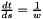 and velocity  between these neighbors are calculated and stored. After that, we found the nearest particle to this second member from the remaining particles and calculate relative positions and velocites and do this iterately until all particles are connected in this chain. The relative positions and velocites can be described by absolute positions and velocities in a ordered chain as:
between these neighbors are calculated and stored. After that, we found the nearest particle to this second member from the remaining particles and calculate relative positions and velocites and do this iterately until all particles are connected in this chain. The relative positions and velocites can be described by absolute positions and velocities in a ordered chain as:
(22) 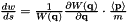; 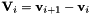
The integration is done with these relative quantities to reduce round off error. The equations of motion can be written as
(23)  ; 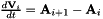
; 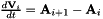
where  is the acceleration of particle
is the acceleration of particle  .
.
When the particles are moved, the nearest neighbor of each particle may become different, thus the update of chain order should be performed with a suitable time interval.
Leapfrog Integrator
By combining the AR algorithm and Chain scheme, we can construct a Leapfrog integrator of equations of motion for $N$-body systems like:
- D mode:
(24) 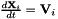; 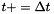; 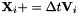
- K mode:
(25)  ; 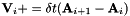; 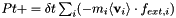;
; 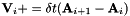; 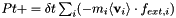; 
where 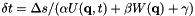 is the external force from outside the system (e.g., perturber force or tidal force) of each particle , and {v}_i is obtained by averaging the velocities of the initial and the final  of this K mode step.
of this K mode step.  are the coefficients representing the weights of the LogH, TTL and non-time-transformation modes separately. For example, if
are the coefficients representing the weights of the LogH, TTL and non-time-transformation modes separately. For example, if  , then no LogH will be performed, and if it is LogH ARC.
, then no LogH will be performed, and if it is LogH ARC.
The initial value of 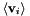 should be the initial binding energy of the system 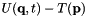. If the system is isolated, is constant. The initial value of  is set to initial .
is set to initial .
The Leapfrog step start with half-step D and then loop full-step K-D-K and stop with half-step D:
(26) 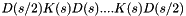
This provide a second order integrator of ARC. Trying this integrator for a two-body bounded system can result in an energy and eccentricity conserved kepler orbit. Only the time phase can have cumulative error after long-term integration.
Extrapolation Integrator
The Leapfrog integrator only has second order accuracy, which is not enough for many applications. One can reduce the step size of integration to obtain higher accuracy. However, as energy is always conserved for two-body motions, we don't have good checker to indicate whether the integration is accurate enough. A better and more efficient way is to extrapolate the integration results to obtain high order accuracy. The idea of extrapolation integration is well summarized in Stoer & Bulirsch. Here the basic algorithm is shown.
First, if we integrate the equations of motion with Leapfrog integrator by step . we get the first result with a certain accuracy. Now we keep the total step constant but divide the integration into several sub-steps with equal sizes by  , we can obtain higher accuracy of the integration. When we use a sequence of dividers 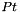 (
, we can obtain higher accuracy of the integration. When we use a sequence of dividers 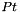 (  ) and do the integration with each of them, we can obtain a series of results with increasing accuracy. Then we can extrapolate these results to get an even higher accurate one.
) and do the integration with each of them, we can obtain a series of results with increasing accuracy. Then we can extrapolate these results to get an even higher accurate one.
There are two major methods of extrapolation: polynomial and rational. Both methods can be described as recursive functions:
- Polynomial:
(27) 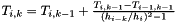, 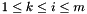
- Rational:
(28) 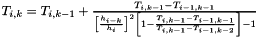,
Here indicate the integration with sub-step size 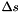, and  indicate the extrapolation order. The 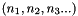 are results of Leapfrog integrations, and for each order , the is final extrapolation result we want. The can be obtained by calculating
indicate the extrapolation order. The 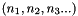 are results of Leapfrog integrations, and for each order , the is final extrapolation result we want. The can be obtained by calculating  from
from  to 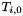 using the recursive functions.
to 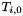 using the recursive functions.
One benefit of these recursive functions is that a higher order extrapolation  can be established based on current existing
can be established based on current existing  with a new higher order integration result 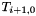. Then it is easy to estimate the error by comparing and to determine whether another higher order result is necessary. For example, in ARC integration, we can check the time or position phase error and energy error to determine how many orders we need to integrate and extrapolate due to the accuracy requirment.
with a new higher order integration result 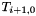. Then it is easy to estimate the error by comparing and to determine whether another higher order result is necessary. For example, in ARC integration, we can check the time or position phase error and energy error to determine how many orders we need to integrate and extrapolate due to the accuracy requirment.
The sequences of dividers  have several choices for different applications:
have several choices for different applications:
- Romberg: (1, 2, 4, 8 ...)
- Bulirsch & Stoer (BS): (1, 2, 3, 4, 6, 8 ...)
- Hairer (4k): (2, 6, 10, 14 ...)
- Harmonic: (1, 2, 3, 4 ...)
Different seuqnces and recursive functions can be combined together for extrapolation integration. We implement all sequences shown above. Later we discuss the special application of some sequences.